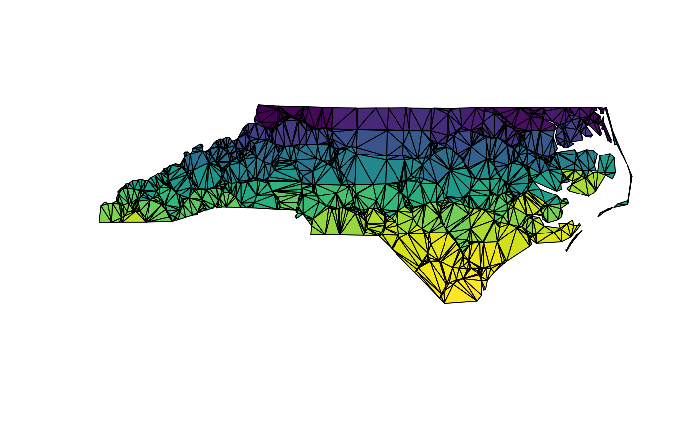
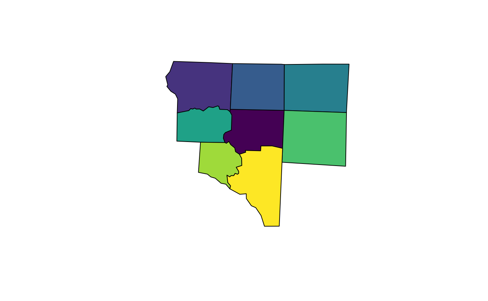
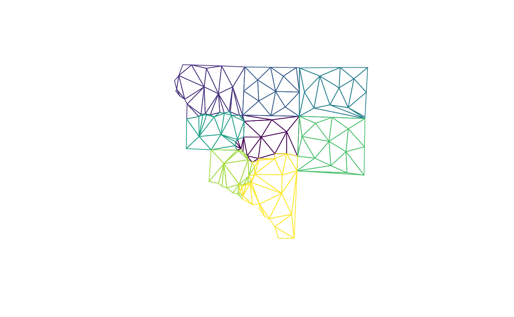
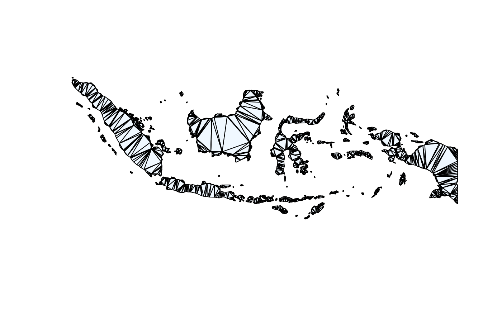

vignettes/sfdct.Rmd
sfdct.RmdThis is a basic example which shows you how to decompose a
MULTIPOLYGON sf data frame object into a GEOMETRYCOLLECTION
sf data frame object made of triangles:
## Linking to GEOS 3.10.2, GDAL 3.4.1, PROJ 8.2.1; sf_use_s2() is TRUE
library(sfdct)
nc <- read_sf(system.file("shape/nc.shp", package="sf"), quiet = TRUE)
nc_triangles <- ct_triangulate(nc)
plot(st_geometry(nc_triangles), col = viridisLite::viridis(nrow(nc_triangles)))
We can use the underlying RTriangle::triangulate
arguments to hone the triangles we get.
i_feature <- 25
nc1 <- nc[c(i_feature, unlist(st_touches(nc[i_feature, ], nc))), ]
plot(st_geometry(nc1),col = viridisLite::viridis(nrow(nc1)))
## subvert st_area because we really don't want m^2
st_crs(nc1) <- NA
areas <- st_area(nc1)
st_crs(nc1) <- st_crs(nc)
nc1_triangles <- ct_triangulate(nc1, a = min(areas)/5)
bcol <- viridisLite::viridis(nrow(nc1_triangles))
plot(st_geometry(nc1_triangles), col = NA, border = bcol)
nc2_triangles <- ct_triangulate(nc1, a = min(st_area(st_set_crs(nc1, NA)))/25)
plot(st_geometry(nc2_triangles), col = NA, border = bcol)Get a grouped triangulated set from a MULTIPOINT. Note how these aren’t constrained by the edges of the input polygons (because we threw those away!) but these are controlled to have a smaller maximum area.
Area is calculated in the native coordinates, assuming “planar coordinates”, with no respect to the real world.
## manual cast to MULTIPOINT originally required
#st_geometry(nc1) <- st_sfc(lapply(unlist(unlist(st_geometry(nc1), recursive = FALSE), recursive = FALSE), st_multipoint), crs = st_crs(nc1))
mp_nc1 <- st_cast(nc1, "MULTIPOINT")
mtriangs <- ct_triangulate(nc1, a = 0.0005)
plot(st_geometry(mtriangs), col = viridisLite::viridis(nrow(mtriangs)), border = "#00000033")
plot(nc[4, ]$geometry)
## q, minimum angle
## D, Delaunay criterion is met
plot(ct_triangulate(nc[4, ]$geometry, q = 35, D = TRUE), add = TRUE, col = "transparent")POLYGON triangles in GEOMETRYCOLLECTION will be re-triangulated. All vertices in the GC will be included, as well as all edges of all component geometries, but each component is triangulated individually, not with reference to the entire set.
We can use piping to chain things together.
##
## Attaching package: 'dplyr'## The following objects are masked from 'package:stats':
##
## filter, lag## The following objects are masked from 'package:base':
##
## intersect, setdiff, setequal, union
g <- map_world %>% dplyr::filter(startsWith(ID, "Indonesia")) %>% ct_triangulate() %>% st_geometry() ## old-style crs object detected; please recreate object with a recent sf::st_crs()
plot(g, col = "aliceblue", main = "")
nc_triangles[1:2, c(1, 5)] %>% st_transform("+proj=laea") %>% ct_triangulate(a = 2e6) %>% plot()
a <- ct_triangulate(st_difference(antarctica[1], antarctica[2, ]), a = 5e10)## Warning: attribute variables are assumed to be spatially constant throughout
## all geometries
plot(a[0], col = "firebrick")The output of ct_triangulate can be the input to another
call to it.
m <- map_world %>% dplyr::filter(startsWith(ID, "Papua New Guinea"))## old-style crs object detected; please recreate object with a recent sf::st_crs()
plotme <- function(x) {plot(st_geometry(x), col = "aliceblue"); x}
m %>% ct_triangulate(a = 0.2, D = TRUE) %>% plotme() ## Simple feature collection with 1 feature and 1 field
## Geometry type: GEOMETRYCOLLECTION
## Dimension: XY
## Bounding box: xmin: 140.8623 ymin: -11.63057 xmax: 155.9576 ymax: -1.353223
## Geodetic CRS: WGS 84
## geometry ID
## 1 GEOMETRYCOLLECTION (POLYGON... Papua New Guinea